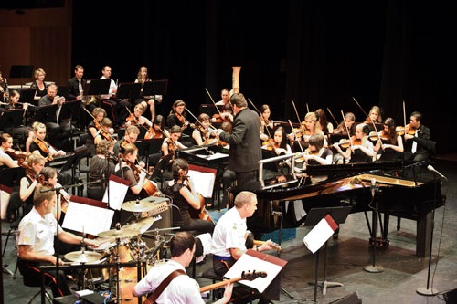
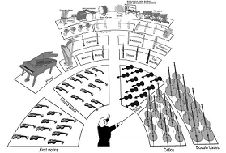
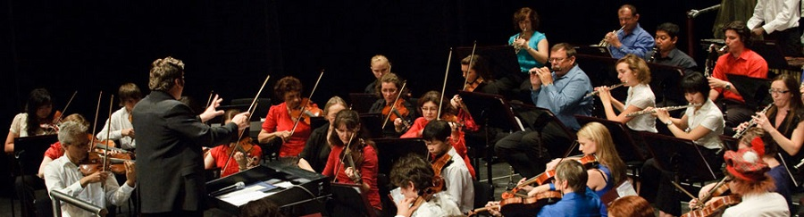
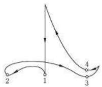
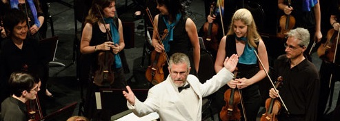

Orchestra Education
Layout of the Orchestra
The layout of the orchestra is often slightly different for every orchestra. As he/she is in charge, the conductor can decide how the instruments are to be arranged on the stage. This depends on many things – the instruments that are required for pieces that are to be performed in the concert, the size of the stage, the number of string instruments that are in each section.
The layout of the Barrier Reef Orchestra on the stage is slightly different to the above diagram. In our program, a harp isn’t required, and when the piano is featured in ‘Rhapsody in Blue,’ it is placed at the front as it features strongly as a solo. No matter what arrangement the conductor decides on, the stringed instruments are always placed toward the front of the orchestra. This is for a very practical reason – they are the quietest family of instruments! If the loud brass or percussion instruments or were at the front of the orchestra, the string instruments would most likely be drowned out!!
The violinist sitting closest to the conductor and closest to the edge of the stage, is the concertmaster. This person is the leader of the orchestra. He/She has the job of organising the tuning of the orchestra at the beginning of (and sometimes during) the concert. He/She must also know the music well, as they often discuss details with the conductor. In the Barrier Reef Orchestra, Stephen Frewen-Lord is our concertmaster. You will notice that his movements are exaggerated so the other players can easily follow his lead, as well as keep an eye on the concductor and their music.
Role of the Conductor
In short, the role of the conductor in an orchestra is mainly to keep everyone together. During rehearsals, the conductor is responsible for determining how the music will be interpreted and for noticing and correcting any errors in how the musicians are performing. Usually, the conductor also chooses the repertoire of the orchestra for each concert or concert season.
The most important thing a conductor of an orchestra does is lead players through rehearsals and performances. He or she accomplishes this in part by standing on a podium in front of the musicians while executing a series of specific arm movements. The musicians interpret these movements, gaining information such as how fast or loud to play. A conductor learns standard conducting patterns as part of his or her education, but each develops his or her own style or approach over time. Fundamental knowledge of every instrument is standard, as well, and during the rehearsal process, conductors might physically demonstrate or verbally describe exactly what they want orchestra members to do.
All musicians in an orchestra must be proficient with their individual parts, but a conductor of an orchestra has to learn entire scores because he or she functions as a musical traffic director; cuing musicians so they enter or leave the musical highway at the right time. To become familiar with a given score, a conductor generally studies it visually, paying attention to theoretical considerations, such as instrumental transposition and harmonic progression. He or she usually makes personal notes in the score as study and rehearsal progress. Additionally, symphony conductors learn works by listening to recorded performances, with some individuals having the capacity to visualize at least one instrument's part at a time as they hear it. Some even hold mock performances for themselves, "conducting" a recording of a performance to practice cuing and other patterns.
Some Arm Movements of a Conductor
If the music has a time signature of 4/4, this is the movement of the conductor’s hand through the air. Start at the high point and follow the numbers…

Concert Etiquette
Live performance is truly magical! When you attend a performance, you are part of the experience. Live concerts are once-in-a-lifetime events - no single performance is like another.
Undesirable behaviour as simple as taking a photograph, or having a conversation at the wrong time, can ruin that moment for everyone in the Concert Hall. Unlike TV or movies, which are the same on the screen whether you are watching or not. Live performance is directly affected by the audience, so please follow these guidelines to allow everyone to gain the most from the experience. Care about those around you, and those on the stage.
This means:
- No talking, except quiet whispering between pieces
- Keep your mobile phone or any other electronic device turned off
- Clap at appropriate times. (In long pieces of music with a number of movements such as Beethoven's Symphony No. 6, it is customary to applaud only at the end of the piece and not after each movement.)
- Keep your hands and feet to yourself